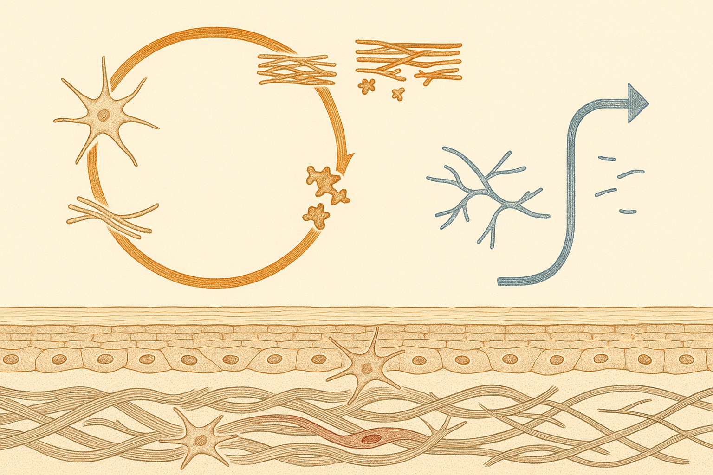
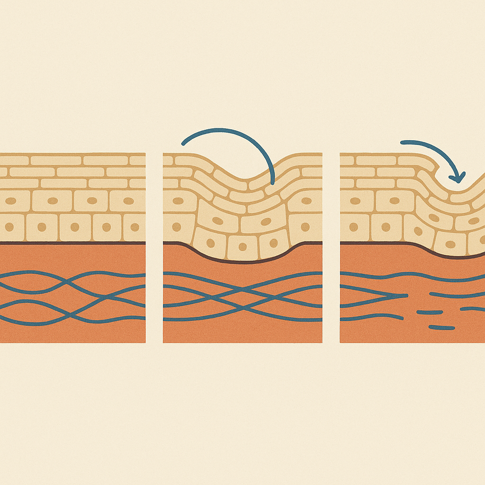
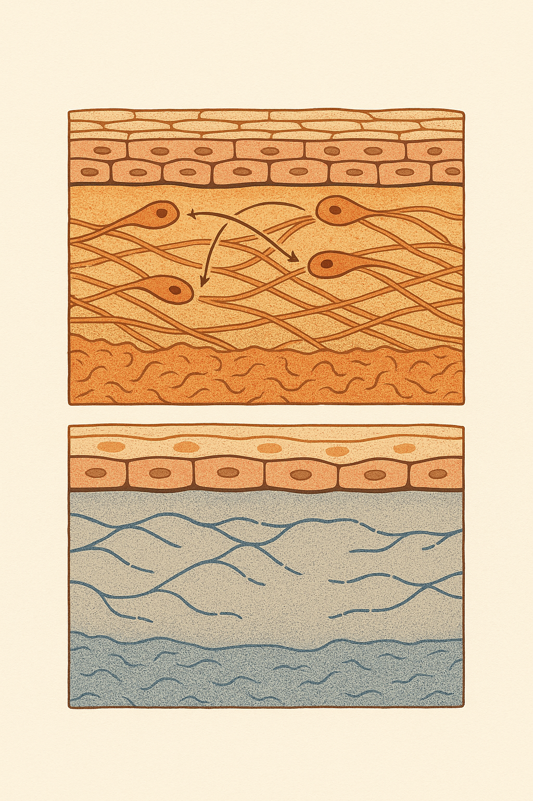

Review below. Reply approve to publish the Facebook post, or tell me edits.

Collagen grows back. Elastin mostly does not.
Start with something small and physical. The pillow mark that used to be gone before you reached the kitchen, and now is still faintly there while the kettle boils. Or the line beside the mouth that lingers a moment after the smile has already left. That is not thinning skin. That is skin taking longer to spring back, which is a different protein doing a different job.
Almost every conversation about ageing skin is a conversation about collagen. Collagen powders, collagen-boosting serums, collagen-stimulating treatments. It is not that the collagen story is wrong. It is that it is only half the story, and it happens to be the half that grows back.
The other half is elastin. It gets a fraction of the attention, and it behaves nothing like collagen. Two proteins, two completely different economies. One you maintain. One you spend.
> Elastin is one of the longest-lived proteins in the human body. One study calculated a mean carbon residence time of roughly 74 years.
Collagen is the bulk of the dermis. Think of it as scaffolding: dense, fibrous, structural, the reason skin has thickness and support rather than sitting on the face like cling film. It is made by fibroblasts, the workhorse cells of the dermis, and it is in constant flux. Old fibres are broken down by enzymes, new ones are laid down, and the balance between those two rates is what you are actually seeing when someone talks about "losing collagen with age".
Because collagen turns over, it is responsive. Slowly, over months rather than days, but genuinely responsive. That is why sun protection, retinoids, and simply not smoking all show up in the dermis eventually. You are nudging a production line that is still running.
When the collagen side of the ledger runs down, skin reads as thinner and slacker. Less cushion. Less structural support underneath.
Elastin is a much smaller fraction of the dermis, and it is built differently: a fine, wavy, branching network of elastic fibres woven through the collagen. Its job is not support, it is recoil. The ability of skin to deform and then return.
Here is the part that changes how you should think about the whole category. The functional elastic network is largely laid down in childhood and adolescence, and adult skin produces very little new functional elastin. The fibres you have are extraordinarily long-lived. The clearest measurement of that longevity comes from a 1991 study that used aspartic acid racemisation and nuclear-weapons-era radiocarbon to date elastin in human lung tissue, and calculated a mean carbon residence time of roughly 74 years. That was lung, not skin, so it is not a direct measurement of the dermis, and it is worth saying so plainly. But it established the principle that elastin is one of the longest-lived proteins in the body, and reviews of skin ageing describe dermal elastic fibres the same way: long-lived, poorly replaced, and progressively degraded rather than renewed.
So the two losses feel different. Collagen loss reads as thinning and slackness. Elastin loss reads as skin that stays creased a beat too long after it moves, which is exactly the pillow mark you started this article thinking about.
You do not have to take any of this on faith. There is a rough observation you can make right now, for free.
Pinch a fold of skin on the back of your hand. Hold it for two seconds. Let go and count how long it takes to flatten completely.
Now do the same on the inner upper arm, a site that has spent most of its life under a sleeve.
Same person. Same age. Same genetics. Same nutrition, same sleep, same everything, except one site has been exposed to daylight for decades and the other has not. Most people find the two recoil times are not the same.
Be honest about what that shows. It is an unblinded observation of a site difference, not a measurement of anything. Hydration, temperature, time of day and how hard you pinched all move the result. It cannot tell you your elastin content, and it is not a diagnostic. What it does illustrate, cheaply, is that exposure history and not just chronological age is doing something to skin's mechanical behaviour. Research using biopsies from exposed forearm versus photoprotected sites has found the fine microfibril network at the top of the dermis is truncated and depleted in photoaged skin, which is the same comparison, done properly.
If a large part of the elastic network is a one-off allocation rather than a renewable resource, then the maths on skincare spending shifts.
Protecting what remains is worth more than trying to rebuild it. That means daily sun protection, and specifically on the sites almost everyone forgets: the backs of the hands, the chest, the throat. Not out of fear, and not as a lecture. Simply because ultraviolet exposure is the main modifiable driver of elastic-fibre damage, and unlike collagen, that damage does not sit on a production line waiting to be topped up.
Corrective work, meanwhile, is not pointless. It is just aimed at the other half. Retinoids, professional treatments, consistent basic care: these mostly act on the renewable side of the ledger, and that is a perfectly good place to spend. Just know which half you are buying.
Photobiomodulation research is largely concerned with fibroblast activity and the collagen side of that ledger, which is to say the renewable half, and over weeks and months rather than days. Red light therapy at home belongs in the maintenance column, not the restoration column: a gentle daily habit that supports the part of skin that was always going to keep rebuilding itself. It is a cosmetic device, not medicine.
So the question worth sitting with is not "what is best for ageing skin". It is narrower than that. Which of the two are you actually trying to buy back: support, or bounce? And does the thing currently in your bathroom cabinet work on that half at all?
Run the ten-second test tonight, both sites, and notice the gap. Hand first, then inner upper arm. How many seconds apart were they? That number, whatever it is, is the clearest argument for sunscreen on the backs of your hands that anyone will ever give you.
If you ever want a closer look at the mask itself, it is here.
Hashtags: #skinlongevity #collagen #elastin #skinscience #sunprotection #redlighttherapy #skincareeducation #photobiomodulation

The pillow mark that used to be gone before you reached the kitchen is now still faintly there while the kettle boils.
Skin runs on two proteins. One rebuilds itself your whole life. The other does not.
Try this now. Pinch the skin on the back of your hand, hold for two seconds, release, and count how long it takes to flatten. Now do the same on your inner upper arm. Same person, same age, two different answers, and the main variable between those two patches is a lifetime of light. It is a rough observation, not a measurement (hydration and temperature move it).
Collagen is the scaffolding, broken down and rebuilt for life. Elastin is the recoil, and adult skin makes very little new functional elastin. The network you have is mostly the allocation you were given.
That is why collagen loss reads as thinning and slackness, while elastin loss reads as a crease that stays a beat too long after you stop smiling.
So the highest-value effort goes into protecting the half that does not come back, because ultraviolet exposure is the main modifiable driver. The forgotten sites are the backs of the hands, the chest and the throat. Light therapy sits on the collagen side of that ledger, gently, over weeks, and it is a cosmetic device, not medicine.
Worth saving this one so you can run the test properly tonight.
Which pair of sites gave you the biggest gap, in seconds?
#skinlongevity #collagen #elastin #skinscience #skincareeducation
CTA: If you ever want a closer look at the mask, it is here: https://redermis.com.au/products/red-light-therapy-face-neck-mask

Pinch the back of your hand and count how long it takes to flatten. Now the inner upper arm. Same age, different answer.
That is two springs, and only one of them grows back.
Collagen is the scaffolding.
Broken down and rebuilt your whole life.
Renewable.
Elastin is the snap-back.
Mostly laid down by early adulthood, and barely renewed after.
Not renewable.
In the mirror they look different.
Collagen loss reads as thinning.
Elastin loss reads as a line that stays after the expression has gone.
Back to the test: the arm has spent its life under a sleeve, the hand has not. The main variable between them is a lifetime of light.
That is an observation, not a measurement. Hydration and temperature both move it.
So the plan splits in two.
You maintain one half. You protect the other.
And the forgotten sites are almost always hands, chest and throat.
Light therapy sits on the renewable side, gently, over weeks. Cosmetic device, not medicine.
Save this one so you can run the ten-second test properly tonight.
Which half is the product in your bathroom cabinet actually working on?
Closer look at the mask via the link in bio.
#skinscience #skincareaustralia #collagen #elastin #skinlongevity #photoaging #redlighttherapy #skineducation
## Title
Collagen and elastin: why only one of skin's two springs grows back
## Description
Skin runs on two proteins that behave nothing alike.
1. Collagen: the scaffolding. Rebuilt your whole life. Renewable.
2. Elastin: the recoil. Adults make very little new, so it is a one-off allocation.
3. The test: pinch the back of your hand, hold two seconds, let go, count. Now the inner upper arm. Same age, different answer. An observation, not a measurement.
4. Protect the half that does not come back: daily SPF on hands, chest and throat.
Cosmetic device, not medicine.
## CTA
If you want a closer look at the red light therapy face mask, it is here.
## Destination URL
https://redermis.com.au/products/red-light-therapy-face-neck-mask
## Hashtags
#SkincareScience #Elastin #Collagen #RedLightTherapy #SkinLongevity #Photoaging
Note: this pin reuses the Instagram image (Pinterest-native 2:3 crop).